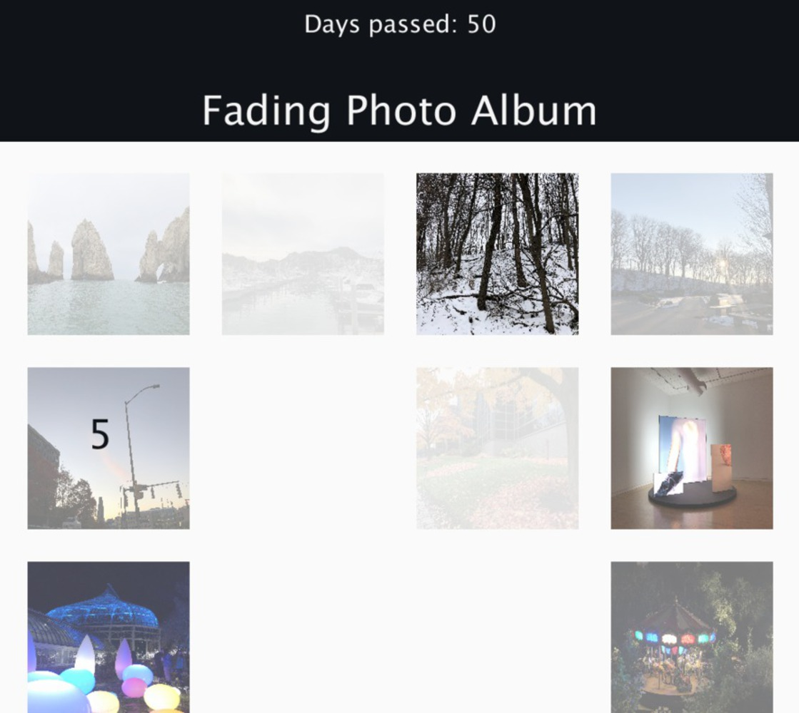

Fading Album
A digital photo album that fades with your memory
Role
Individual Project
Tools
Processing.js
Duration
Spring 2019
What if machines could forget?
This creative computing project explores technology as a reflection of how human memories work. The interactive photo album stores a gallery photos, but over time, each image continuously fades into a blur to simulate forgetting an old memory. Once photos become blurred to a certain point, they will be “forgotten” by the album and deleted.
Simulating active recall
New photos are much clearer and mimic how our own perception of things is clearer closer to the present. You can also look back at photos, and those recalled more frequently become less blurred as frequently recalling a memory facilitates it.

As a curation tool
A common issue with digital photo albums is they quickly cluttered with irrelevant photos and screenshots collected over time. By adding this fading mechanism, over time, only the photos that are most meaningful to us will stand the test of time.

Thought explorations
As I created this piece, I wanted to interaction to prompt the questions:
- Should forgetting be implemented into machines and everyday technology?
- How is technology influencing the way we recall things and remember events? We are so reliant on our phones and devices to store information as subsitutes for natural memory.
- What are the drawbacks of technology that remembers everything? What are the benefits which come with forgetting?
Read more about my process here